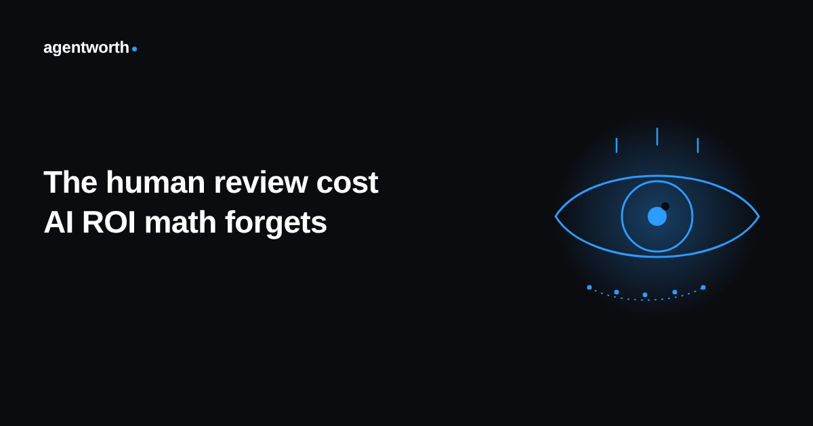

The human review cost most AI agent ROI math forgets

Ask a team how much their AI agent is saving them and you will usually get a clean number. Tickets resolved automatically, multiplied by what a human would have cost to resolve the same ticket. It looks like simple arithmetic. It is also missing an entire column of the ledger.
Almost every AI agent handling real customer work still has people behind it. Someone is spot checking a sample of conversations for tone and accuracy. Someone is the person the agent escalates to when it is unsure, which happens more often than most dashboards admit. Someone reads the flagged transcripts after a customer complains, and someone rewrites the prompts every time a product change makes the agent's old answers wrong. None of that work shows up in the savings number, because none of it was ever counted as a cost of running the agent in the first place.
Where the review cost actually hides
It is not one line item, which is part of why it gets missed. It is spread across a handful of roles that each absorb a small piece of it and none of them labeled "AI agent oversight" in anyone's time tracking. A support lead spends an hour each morning reading a sample of the agent's conversations before the rest of the team logs on. A senior rep keeps a side channel open for the cases the agent hands off, cases that are disproportionately the hardest, angriest, or highest value tickets in the queue. An ops person updates the agent's instructions every time pricing or policy changes, work that used to not exist at all before the agent did.
Add it up and it is often a real person's part time job, sometimes close to a full one. It just never gets subtracted from the savings total, because nobody built a line for it when the ROI slide was first put together.
Why nobody subtracts it
Part of the reason is incentive. The team that owns the agent is usually the same team that reports on whether it is working, and a smaller number is not the number anyone wants to present at a budget review. Part of it is genuinely hard to measure. Review time is scattered across people and tools, rarely tracked with the same precision as the tickets it affects, so even a well meaning team can struggle to put a defensible figure on it.
But the bigger reason is that most ROI math was built to answer one question, whether the agent resolves tickets cheaper than a person. That question has a flattering answer almost every time. It is a different, less comfortable question, whether the agent resolves tickets cheaper than a person once you count everyone still required to keep it safe, that tends to shrink the number considerably.
What a real number has to include
A defensible ROI figure treats human review as a cost center the same way it treats the AI agent's own usage fees, not as a rounding error to ignore. That means logging who reviewed what, how long it took, and why, the same way the agent's own resolutions get logged. It means tracking escalations as a cost, not just a quality metric, since every one of them is a case the agent did not actually resolve on its own. And it means revisiting that number whenever the team's reviewing and escalating habits change, because they will, as trust in the agent grows or a bad week makes everyone double check it again.
None of this is an argument against using AI agents. It is an argument against pretending the people still watching them cost nothing. A number that only counts what the agent did, and never what it took to keep the agent reliable, was never the full picture to begin with.
This is exactly the gap agentworth's audit log is built to close, logging the agent's outcomes and the human work around them on the same ledger, so the ROI number that reaches finance already has the review cost subtracted rather than discovered later. Try the free ROI calculator to see where your own number sits, or read the full ROI report for more on what a trustworthy AI agent ROI figure actually requires.